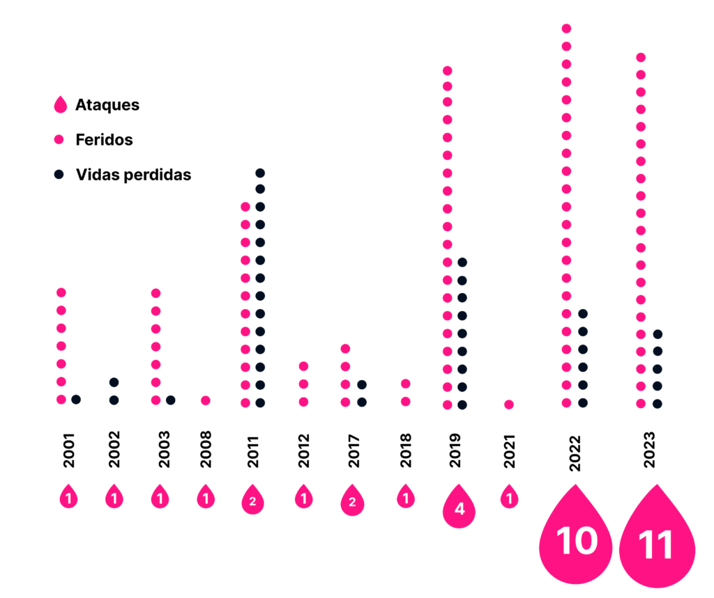

Por que falar da cultura de paz
nas escolas?
A escalada de casos de violência e ataques
em escolas brasileiras tem gerado grande
preocupação e demandado soluções
urgentes. Nesse contexto, a promoção da
cultura de paz emerge como um caminho
promissor para construir um ambiente
escolar mais seguro e humanizado.
A escalada de casos de violência e
ataques em escolas brasileiras tem
gerado grande preocupação e
demandado soluções urgentes. Nesse
contexto, a promoção da cultura de paz
emerge como um caminho promissor
para construir um ambiente escolar mais
seguro e humanizado.
A seguir, podemos conferir a linha histórica
dos casos de violência nas escolas,
notando o aumento do número de casos
nos últimos dois anos.
